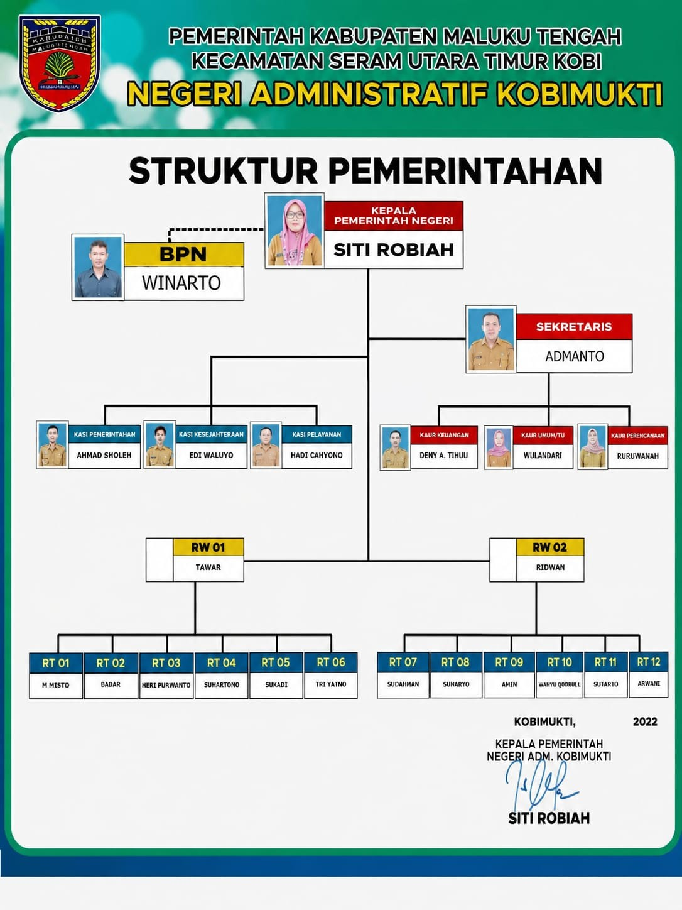

Desa agraris yang maju, mandiri, dan sejahtera berbasis kekayaan alam Seram — pertanian, perkebunan, dan perikanan yang lestari.
Tentang Kami
Negeri Administratif Kobimukti terletak di Kecamatan Seram Utara Timur Kobi, Kabupaten Maluku Tengah. Dikelilingi hutan tropis dan pesisir yang subur, desa ini menyimpan potensi pertanian, perkebunan, dan perikanan yang besar dan belum sepenuhnya dikembangkan.
Dengan semangat gotong royong yang kuat, masyarakat Kobimukti bersatu membangun desa yang mandiri, maju, dan tetap menjaga harmoni dengan alam.
Baca SelengkapnyaMengenal Lebih Dekat
Negeri Administratif Kobimukti terbentuk melalui pemekaran wilayah berdasarkan kebutuhan masyarakat akan pelayanan pemerintahan yang lebih dekat dan efektif. Nama "Kobimukti" berakar dari bahasa daerah setempat yang mencerminkan semangat kemerdekaan dan kejayaan masyarakat lokal.
Kobimukti terletak di Pulau Seram, bagian utara-timur, dalam wilayah administrasi Kecamatan Seram Utara Timur Kobi, Kabupaten Maluku Tengah.
Arah & Tujuan
— Visi Desa
Visi ini menjadi pedoman seluruh program pembangunan desa untuk periode pemerintahan saat ini.
— Misi Desa
Meningkatkan produktivitas pertanian melalui penerapan teknologi tepat guna dan pemberdayaan kelompok tani.
Mengembangkan potensi perikanan dan kelautan sebagai sektor unggulan ekonomi masyarakat pesisir.
Meningkatkan kualitas pelayanan publik yang cepat, transparan, dan mudah diakses oleh seluruh warga.
Meningkatkan kualitas sumber daya manusia melalui pendidikan, pelatihan, dan pemberdayaan masyarakat.
Membangun dan meningkatkan infrastruktur desa yang merata guna mendukung aktivitas ekonomi dan sosial.
Menjaga kelestarian lingkungan hidup dan kearifan lokal sebagai warisan untuk generasi mendatang.
Pemerintahan Desa
Perangkat Negeri Administratif Kobimukti yang berkomitmen melayani masyarakat dengan penuh dedikasi.

Lembaga yang menjalankan fungsi pemerintahan desa sebagai mitra sejajar Kepala Desa dalam pengawasan dan penyusunan peraturan desa.
Ketua RT dan RW berperan sebagai ujung tombak pelayanan dan komunikasi antara pemerintah desa dengan warga di tingkat lingkungan.
Untuk Warga Kami
Kantor desa melayani berbagai kebutuhan administrasi warga setiap hari kerja. Datang langsung atau hubungi perangkat desa setempat.
Surat keterangan tempat tinggal resmi yang dibutuhkan untuk berbagai keperluan administrasi, pekerjaan, dan instansi.
Diperlukan untuk legalisasi usaha kecil, pengajuan modal usaha, dan keperluan perbankan atau koperasi.
Surat pengantar dari desa sebagai syarat pembuatan atau perpanjangan Kartu Tanda Penduduk (KTP) di Dukcapil.
Untuk keperluan pembuatan baru, pembaruan, atau penambahan anggota dalam Kartu Keluarga (KK) melalui Dukcapil.
Diterbitkan bagi warga kurang mampu untuk keperluan beasiswa, keringanan biaya kesehatan, dan bantuan sosial.
Komunikasi & Informasi
Pemerintah Negeri Administratif Kobimukti berkomitmen untuk menyebarkan informasi kepada seluruh lapisan masyarakat secara merata dan tepat sasaran.
Mengingat kondisi geografis dan keterbatasan infrastruktur digital, saat ini informasi desa masih disampaikan melalui saluran-saluran komunikasi tradisional dan komunitas yang telah dipercaya masyarakat.
Desa terus berupaya meningkatkan sistem informasi digital untuk memperluas akses layanan kepada seluruh warga.
Informasi penting disampaikan langsung melalui pengeras suara masjid — media komunikasi paling efektif menjangkau seluruh warga secara serentak dan cepat.
Grup resmi desa di WhatsApp digunakan untuk berbagi informasi, pengumuman kegiatan, dan koordinasi antar perangkat desa dan warga secara real-time.
Ketua RT dan RW menjadi penghubung utama antara pemerintah desa dan warga. Informasi diteruskan secara bertingkat hingga ke setiap rumah tangga.
Untuk informasi mendesak atau warga yang tidak terjangkau media lain, petugas desa menyampaikan langsung ke rumah — memastikan tak ada warga yang terlewat.